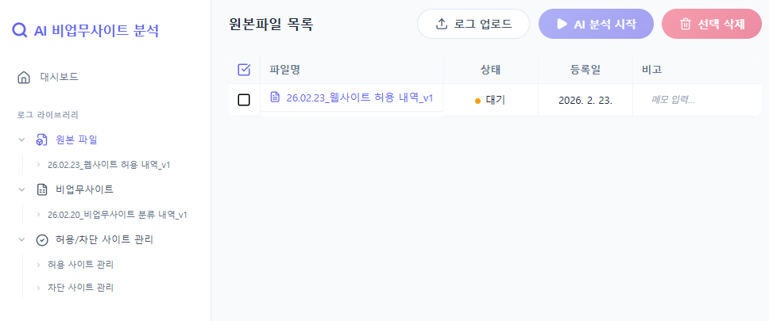
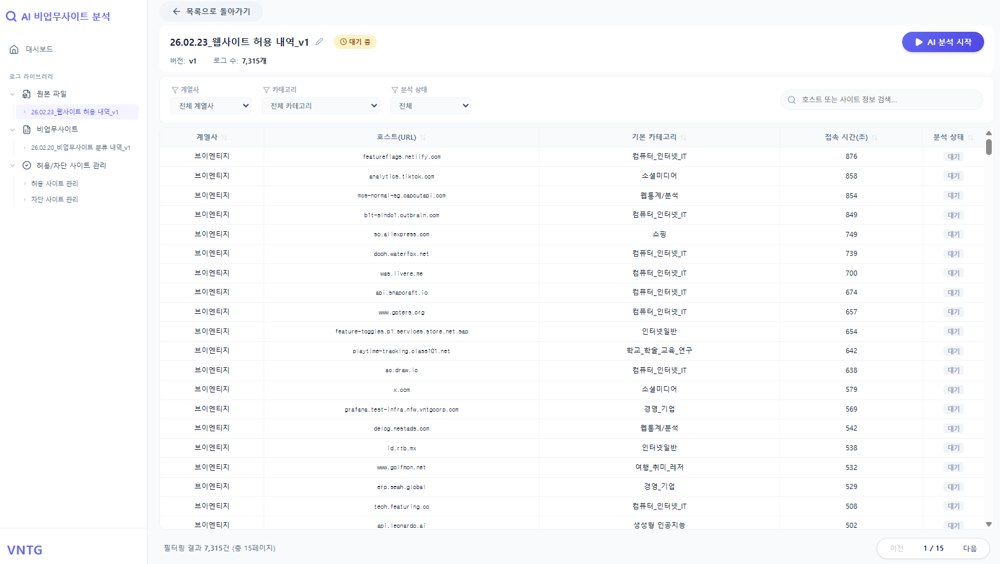
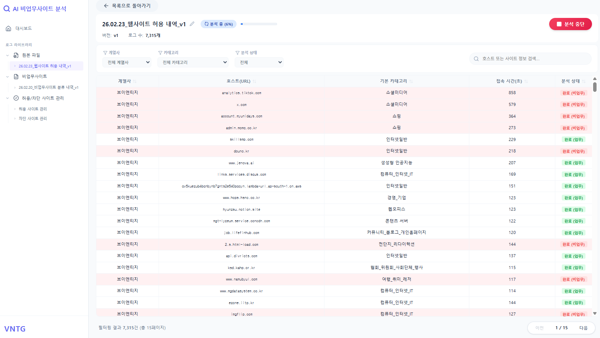
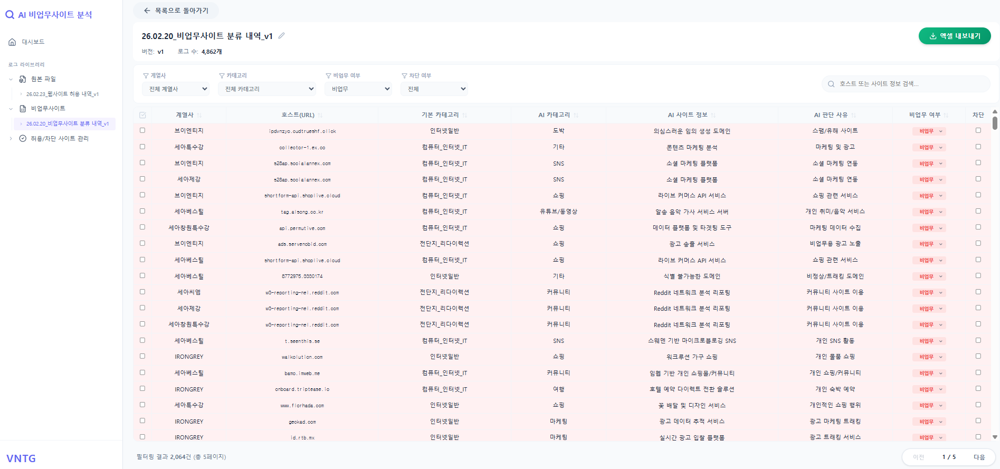
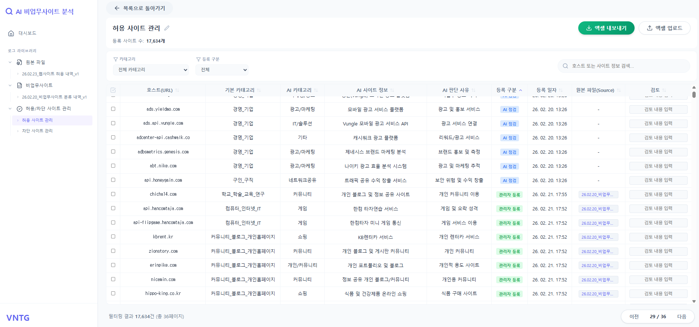
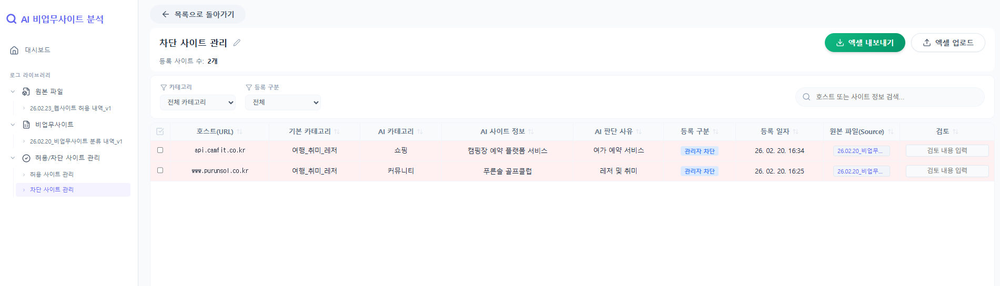
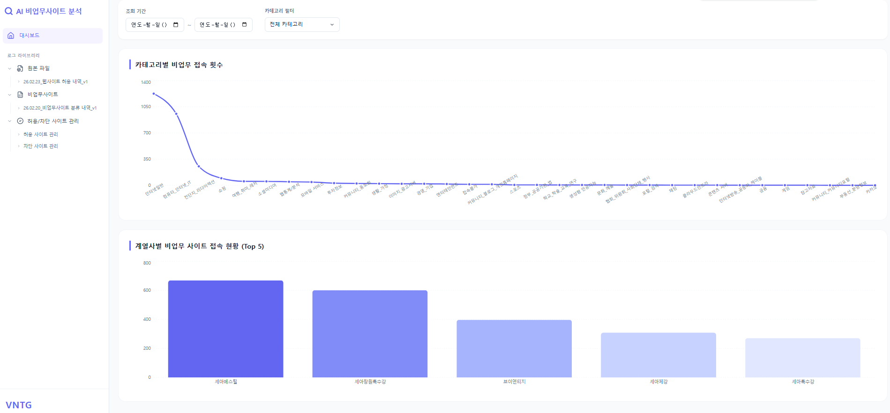

URL을 자동 분류해 유해 여부를 판정하는 시스템
계열사별 웹 접속 로그를 AI가 분석하여, 관리자 수동 작업을 대폭 절감합니다
이미지를 클릭하면 크게 볼 수 있습니다







기존 수동 분석 방식의 한계에서 출발했습니다
세 가지 핵심 기능으로 URL 분석부터 대시보드까지 한 번에
업로드된 접속 로그의 각 URL(호스트)을 Gemini AI가 하나씩 분석합니다. 분석 진행률을 실시간으로 확인할 수 있으며, 중간에 중단해도 재시작 시 남은 항목부터 이어서 분석합니다.
AI 분석 결과를 바탕으로 사이트를 자동 분류합니다. 비업무 사이트로 판정된 항목은 분류 내역 파일에 저장되며, 관리자가 최종 허용/차단 여부를 결정할 수 있습니다.
분석된 데이터를 한눈에 볼 수 있는 대시보드를 제공합니다. 카테고리별 비업무 접속 현황과 계열사별 Top 5 사이트를 시각화하여 보안 현황을 즉시 파악할 수 있습니다.
로그 수집부터 결과 조회까지의 전체 흐름
로그 업로드부터 대시보드 확인까지 순서대로 따라하세요
매년 1월 1일, 사이드 메뉴에 해당 연도 폴더를 생성합니다. 그 아래 원본 파일 폴더와 비업무사이트 폴더를 만들어 두면 이후 모든 분석 결과가 자동으로 분류됩니다.
유해사이트 차단 솔루션에서 추출한 접속 로그 엑셀 파일을 업로드합니다. 파일은 자동으로 YY.MM.DD_vX 형식으로 버전 관리됩니다.
업로드된 로그의 URL을 Gemini AI가 하나씩 분석합니다. 화면에서 분석 진행률을 확인할 수 있으며, 필요 시 분석을 중단했다가 나중에 이어서 진행할 수 있습니다.
AI 분석이 완료되면 비업무사이트 폴더에 분류 내역 파일이 생성됩니다. 계열사 · 카테고리 · 비업무여부 · 차단여부로 필터링하며 결과를 검토합니다.
대시보드에서 전 계열사 비업무 접속 현황을 한눈에 확인합니다. 기간과 카테고리 필터를 활용해 원하는 구간의 데이터를 빠르게 조회할 수 있습니다.
도입 후 달라지는 업무 환경